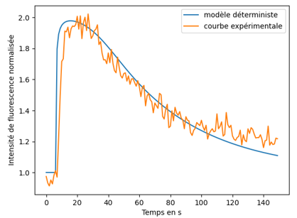

Simulation de la réparation de l’ADN
L’objectif de ce projet de groupe était de simuler la dynamique de recrutement et de dissociation de la protéine PARP1 au niveau de lésions sur de l’ADN. La protéine PARP1 joue un rôle important dans la réparation en se fixant sur les zones endommagées puis en catalysant la formation de polymères qui permettront la réparation par la suite.
Pour caractériser et simuler son arrivée sur une région d’ADN, des modèles simplifiés ont été développés en suivant deux approches : un modèle stochastique et un modèle déterministe.
Dans un premier temps, des données expérimentales ont été récoltées en laboratoire afin d’avoir des mesures de références pour les modèles. Nous avons utilisé des cellules transfectée avec une construction PARP1-GFP, ce qui rend la protéine fluorescente sous certaines longueurs d’ondes. La méthode de relevé consistait à endommager volontairement une zone d’ADN sur le noyau, puis d’acquérir des images toutes deux secondes afin d’observer l’arrivée et la dissociation de la protéine PARP1. Pour quantifier l’évolution de la concentration en PARP1, les images ont été traités sur le logiciel Fiji. Sur ces dernières, l’intensité de PARP1 était relevée sur trois points témoins : la zone de cassure, le noyau, et une zone en dehors de la cellule. Les données ont ensuite été corrigée puis normalisées.
Le premier modèle de simulation suivait une démarche déterministe en utilisant un système d’équation différentielles décrivant la diffusion de PARP1 dans le temps et l’espace.
Le second modèle, suivant une démarche stochastique, consistait à simuler la diffusion et les interactions sur chaque molécule de PARP1 dans la cellule en mettant en place un algorithme de type marche aléatoire. Cela consistait à suivre le déplacement de chaque molécule et leur attribuer un état selon si elles se trouvaient dans la zone d’ADN cassée ou non.
Pour optimiser les résultats de ces deux modèles, une recherche de paramètres a été mise en place en utilisant un Grid Search. L’ensemble des scripts ont été codés en Python.
Le projet s’est conclu sous la forme d’un rapport, et d’une présentation orale.
Compétences acquises :
- Utilisation du logiciel Fiji pour le traitement d’images
- Simulation d’un processus biologique en Python
- Mise en place et validation d’un modèle mathématique à partir de données expérimentales
- Optimisation d’un modèle
- Rédaction d’un rapport scientifique
- Manipulation et visualisation de données avec Python
- Développement de mes connaissances en biologie
Illustrations

Zone relevé sur les cellules : A) Zone de cassure ; B) arrière-plan ; C) cellule

Évolution de la fluorescence normalisée de PARP1 non traitée en fonction du temps (échantillonnage : 1 image / 2 s).